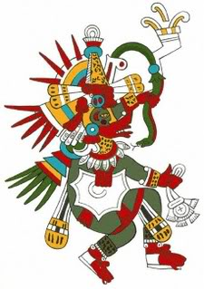
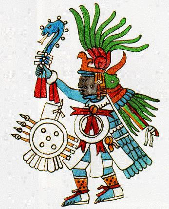

Breve Historia de la Cuenca de México
Serie de transformaciones del paisaje

Cuando la agricultura comenzó a desarrollase en la cuenca, hace unos 7 000 años (Lorenzo, 1981; Niederberger, 1979), los grupos humanos en el área se hicieron sedentarios y empezaron a organizarse en pequeños poblados ocupando las partes bajas del valle. Los primeros grupos sedentarios se establecieron en áreas planas que poseían un buen potencial productivo y adecuada humedad, pero que, al mismo tiempo, se encontraban cerca de áreas más elevadas como para evitar las inundaciones durante la temporada de lluvias (Niederberger, 1979). Entre los años 1700 y 1100 a. C., los primeros poblados grandes empezaron a formarse al noreste de la cuenca. Para el año 100 a. C., la población de la cuenca era de aproximadamente 15 000 habitantes, con varios pueblos de más de 1 000 personas distribuidos en diferentes partes del valle. Hacia los comienzos de la Era Cristiana la población de Texcoco, al este de la cuenca, era ya de unos 3 500 habitantes. En esa misma época comenzó el desarrollo del centro urbano y religioso de Teotihuacan, al noreste del lago de Texcoco y suficientemente alejado de las áreas más proclives a las inundaciones. Hacia el año 100 d.C., Teotihuacan tenía ya unos 30 000 habitantes, y cinco siglos más tarde, en el año 650, la población de este gran centro ceremonial alcanzó a superar los 100 000 habitantes (Parsons, 1976). Un siglo más tarde, la población de Teotihuacan había descendido nuevamente a menos de 10 000 habitantes. No se sabe con certeza cuál fue la causa del colapso de esta cultura. Algunos investigadores lo atribuyen al alzamiento de grupos sometidos; otros, al agotamiento de los recursos naturales explotados por los teotihuacanos. Aun si la primera hipótesis fuera cierta, el significado ecológico del tributo que se exigía a los grupos sometidos era el de aportar recursos naturales con los que se subsidiaba la economía local. En cualquiera de las dos hipótesis, por lo tanto, el agotamiento de los recursos naturales y el conflicto sobre su apropiación aparecen como la causa principal. Según Sanders (1976a; véase también Sanders et al., 1979) la sobreexplotación de los recursos naturales semiáridos que rodean a Teotihuacan, junto con la falta de una tecnología apropiada para explotar los terrenos fértiles pero inundables del fondo de la cuenca, fueron determinantes decisivos en el colapso de esta civilización. Varias culturas existieron en las márgenes de los lagos antes y durante la llegada y el establecimiento de los aztecas. Además de los asentamientos originales en Teotihuacan, Texcoco y en varios otros pueblos menores, inmigrantes de otros grupos étnicos se fueron asentando en la cuenca. Los chichimecas, provenientes del norte, se asentaron en Xoloc; mientras que acolhuas, tepanecas y otomíes ocupaban las márgenes occidentales del lago (Azcapotzalco, Tlacopan y Coyohuacan) y grupos de influencia tolteca se establecían al oriente (Culhuacán, Chimalpa y Chimalhuacán). El sistema lacustre en el fondo de la cuenca se fue rodeando lentamente de un cúmulo de pequeños poblados. El desarrollo de nuevas técnicas agrícolas basadas en el riego por inundación del subsuelo y en la construcción de canales, permitieron un impresionante aumento en las densidades poblacionales. En los campos cultivados con esta nueva técnica, las chinampas, los canales servían a la vez como vías de comunicación y de drenaje, mientras que la agricultura en campos rellenados con el sedimento extraído de los canales permitió un mejor control de las inundaciones. Los grupos residentes, al mismo tiempo, fueron aprendiendo a reemplazar la falta de grandes herbívoros para la caza con la caza y recolección de productos de los lagos y de los canales, entre ellos varias especies de peces y de aves acuáticas, ranas, ajolotes, insectos y acociles, así como con la recolección de quelites y hierbas verdes descritos en el capítulo anterior. Alrededor del año 1325, los aztecas —o mexicas— llegaron del norte y fundaron su ciudad en una isla baja e inundable, la isla de Tenochtitlan, que en pocos siglos se convirtió en la capital del poderoso imperio azteca y en el centro político, religioso y económico de toda Mesoamérica. Aún no se sabe con certeza la razón por la cual los aztecas eligieron este sitio para fundar su ciudad, pero la elección se convirtió con el tiempo en una leyenda de gran importancia cultural y en un elemento de tradición e identidad étnica. Según la leyenda azteca, el lugar de asentamiento de su ciudad fue revelado por los dioses bajo la forma, de un águila devorando una serpiente sobre un nopal. Esta manifestación fue tomada como señal del fin de su larga peregrinación desde Aztlán. Se puede argumentar que, para la civilización lacustre de la cuenca en ese momento, los asentamientos en tierras más altas no representaban ninguna ventaja, porque éstas no eran cultivables bajo el sistema de Chinampas que era la base económica de todos los grupos humanos en la región. Es también probable que durante las primeras etapas de su asentamiento, los aztecas no dispusieran del poder militar necesario para desplazar a otros grupos de los mejores sitios agrícolas. Aunque menos valiosa desde el punto de vista agrícola que las vecinas localidades de Texcoco, Azcapotzalco, o Xochimilco, la pequeña e inundable isla de Tenochtitlan se encontraba físicamente en el centro de la cuenca. Esta característica fue un elemento de gran importancia en la cosmovisión azteca, que se basó en la creencia de que la isla era el eje cosmológico de la región, el verdadero centro de toda la Tierra. Reforzada por la necesidad de obtener alimentos de fuentes externas, esta creencia probablemente determinó en gran medida la estructura social de la metrópoli azteca, organizada alrededor de guerreros despiadados y de una poderosa casta sacerdotal. Estas dos clases mantuvieron un inmenso imperio basado en la guerra ritual y en la dominación de los grupos vecinos (García Quintana y Romero Galván, 1978). Entre los años de 1200 y de 1400 d.C., antes, durante y después de la llegada de los aztecas, una impresionante sucesión de cambios culturales y tecnológicos tuvo lugar en la cuenca, tanto antes como después de la fundación de Tenochtitlan. Se estima que hacia finales del siglo XV la población de la cuenca alcanzó el millón y medio de habitantes, distribuidos en más de cien poblados. En ese tiempo la cuenca de México era, con toda seguridad, el área urbana más grande y más densamente poblada de todo el planeta. Tlatelolco, originalmente una ciudad separada de Tenochtitlan, había sido anexado por los aztecas en 1473 y formaba parte de la gran ciudad. La ciudad presentaba una traza cuadrangular de algo más de tres kilómetros, por lado con una superficie total de cerca de 1 000 hectáreas. Estaba dividida en barrios o calpulli relativamente autónomos, en los que se elegían los jefes locales. Los espacios verdes eran amplios: las casas de los señores tenían grandes patios interiores y las chozas de los plebeyos se encontraban al lado de su chinampa, en la que se mezclaban plantas comestibles, medicinales y de ornato. La mitad de cada calle era de tierra dura y la otra estaba ocupada por un canal. Dado que los aztecas no usaban animales de carga ni vehículos terrestres, el transporte de carga por medio de chalupas y trajineras era el medio más eficiente. Las dos islas más grandes y pobladas del lago, Tenochtitlan y Tlatelolco, habían sido unidas a un grupo de islas menores mediante calles elevadas, formando un gran conglomerado urbano rodeado por las aguas del lago y vinculado con las márgenes del lago a través de tres calzadas elevadas hechas de madera, piedra y barro apisonado. Dos acueductos, construidos con tubos de barro estucado, traían agua potable al centro de Tenochtitlan: uno bajaba de Chapultepec por la calzada a Tlacopan y el otro venía de Churubusco por la calzada a Iztapalapa. Para controlar las inundaciones un largo albardón —la presa de Nezahualcóyotl— había sido construido en la margen este de la ciudad, para separar las aguas de Tenochtitlan de las del gran cuerpo de agua que formaba en esa época el Lago de Texcoco. Vale la pena discutir, en este momento, el fenómeno del canibalismo ritual de los aztecas como un problema relacionado con el uso ambiental de la cuenca. Existen dos grandes corrientes antropológicas que tratan de explicar este fenómeno (Anawalt, 1986). La primera, una corriente humanista, explica el canibalismo ritual como el resultado de la concepción azteca del Cosmos. Según estos pensadores la ideología particular y las creencias religiosas de los aztecas fueron el motor principal de estos ritos sangrientos. Otros investigadores, que llamaremos la corriente materialista, no otorgan a la ideología un lugar tan importante y piensan que las presiones materiales generadas por el mismo crecimiento de la población fueron la causa principal del canibalismo. Para algunos, este ritual servía como un cruento mecanismo de control demográfico; para otros, proporcionaba a los sacerdotes y a los guerreros un suplemento alimenticio altamente proteico en una sociedad donde la obtención de proteínas representaba un problema social. Como en todas las polémicas de este tipo, es probable que ambos grupos tengan algo de razón. La respuesta a este enigma puede encontrarse, en parte, en los recientes hallazgos de Eduardo Matos Moctezuma (1987) en las excavaciones del Templo Mayor de Tenochtitlan. Estos estudios han demostrado que el Imperio azteca estaba basado en el culto religioso del Sol, la guerra y los sacrificios. Según Matos, las dos divinidades que compartían el santuario en la cúspide del Templo Mayor, Tláloc, el dios de la lluvia y el agua, y Huitzilopochtli, el dios del Sol y de la guerra, representaban las bases del poder azteca: la agricultura y el tributo guerrero. El Templo Mayor constituía el centro del Imperio azteca y era también su mayor símbolo, la representación material de su cosmovisión. Funcionaba como observatorio astronómico y permitía regular y administrar la eficiente agricultura mexica, uno de los principales pilares del imperio. Pero también funcionaba como lugar ceremonial en el centro físico de la cuenca, al cual llegaban tributos de toda la periferia sojuzgada mediante la guerra. Entonces, el Templo era también una especie de metáfora del segundo soporte del imperio, la apropiación de recursos exógenos a la cuenca. El desarrollo agrícola y la apropiación de tributos mediante la guerra formaban parte fundamental del universo ideológico y de las necesidades materiales de lo que ya en el siglo XIV era la región más densamente poblada del planeta. De esta manera, la explicación ideológica del canibalismo azteca quedaría enmarcada en una lógica económica: el macabro ritual servía para legitimar el poder de los dirigentes, para mantener el espíritu militarista y, en última instancia, para preservar el sistema de conquista y tributo guerrero que permitía a los aztecas apropiarse de los productos generados por otros grupos (Duverger, 1983).


Acontecimientos importantes de México Preispanico